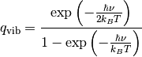
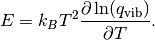

Unit conversion¶
Introduction¶
The MolMod package expresses all quantities in a well-defined internal units. Whenever numerical data goes into the MolMod code, it is assumed to be in internal units, and results will also be returned in internal units. When data is read from a file (through one of the modules in molmod.io) the numerical values are immediately converted to internal units. In case one needs to print a number on screen or to a file, it can be converted back to some non-internal unit.
The internal units in MolMod are the atomic units. Most atomic units are listed at the NIST website for physical constants. There is no atomic unit for temperature, so we use Kelvin as the internal unit of temperature. This approach has three advantages:
- Atomic units are, just like the SI units, consistent. This means that, given any mathematical expression, one can just plug in all values in atomic units and the result will come out in atomic units, without the need for some conversion factor.
- Most molecular quantities have a reasonable order of magnitude in atomic units, which reduces numerical issues.
- Several important constants become unity, which simplifies the programming.
The conversion factors to translate values from and to internal units are defined in the module molmod.units. The convention for unit conversion is as follows:
- Multiplication with a constant converts a value to internal units.
- Division with the same constant converts a value back to the non-internal unit
A simple example illustrates these conventions:
1 2 3 4 5 | from molmod import *
distance = 5*angstrom
print "Distances in internal units:", distance
print "Distances in Angstrom:", distance/angstrom
|
Some relevant physical constants are defined in molmod.constants.
Examples¶
Energies¶
This example shows, given a reactant and product energy, how one computes the reaction energy and prints out the result in kJ/mol.
File: examples/000_units/a_reaction.py
1 2 3 4 5 6 7 8 9 10 11 12 13 14 15 16 17 18 19 20 21 22 23 24 25 26 27 28 29 30 31 32 33 | #!/usr/bin/env python
# -*- coding: utf-8 -*-
# MolMod is a collection of molecular modelling tools for python.
# Copyright (C) 2007 - 2012 Toon Verstraelen <Toon.Verstraelen@UGent.be>, Center
# for Molecular Modeling (CMM), Ghent University, Ghent, Belgium; all rights
# reserved unless otherwise stated.
#
# This file is part of MolMod.
#
# MolMod is free software; you can redistribute it and/or
# modify it under the terms of the GNU General Public License
# as published by the Free Software Foundation; either version 3
# of the License, or (at your option) any later version.
#
# MolMod is distributed in the hope that it will be useful,
# but WITHOUT ANY WARRANTY; without even the implied warranty of
# MERCHANTABILITY or FITNESS FOR A PARTICULAR PURPOSE. See the
# GNU General Public License for more details.
#
# You should have received a copy of the GNU General Public License
# along with this program; if not, see <http://www.gnu.org/licenses/>
#
#--
#!/usr/bin/env python
from molmod import *
energy_react = -157.31456213
energy_prod = -157.31397873
reaction_energy = energy_prod - energy_react
print "Reaction energy [kJ mol^-1]:", (reaction_energy/kjmol)
|
This example is very basic, but it demonstrates some general requirements for any script that uses the MolMod package:
The first line always reads #!/usr/bin/env python. This only matters when the script is executed on a Unix machine. It is the so-called shebang line, which is used to determine the interpreter when the script is executed on the command line:
toon@poony ~> ./a_reaction.py
is equivalent to:
toon@poony ~> /usr/bin/env python a_reaction.py
The short form only works when the executable flag of the script file is set. If this is not the case yet, it can be changed as follows:
toon@poony ~> chmod +x a_reaction.py
The beginning of the file must contain a line from molmod import * to import the entire molmod package. Some alternative methods to import libraries in Python are discussed in the official Python documentation.
Wavenumber¶
Given the mass and force constant of a harmonic spring the following script computes the spectroscopic wavenumber of the oscillation. The mass and the force constant are an approximate model for a C-H bond.
File: examples/000_units/b_chbond.py
1 2 3 4 5 6 7 8 9 10 11 12 13 14 15 16 17 18 19 20 21 22 23 24 25 26 27 28 29 30 31 32 33 34 35 | #!/usr/bin/env python
# -*- coding: utf-8 -*-
# MolMod is a collection of molecular modelling tools for python.
# Copyright (C) 2007 - 2012 Toon Verstraelen <Toon.Verstraelen@UGent.be>, Center
# for Molecular Modeling (CMM), Ghent University, Ghent, Belgium; all rights
# reserved unless otherwise stated.
#
# This file is part of MolMod.
#
# MolMod is free software; you can redistribute it and/or
# modify it under the terms of the GNU General Public License
# as published by the Free Software Foundation; either version 3
# of the License, or (at your option) any later version.
#
# MolMod is distributed in the hope that it will be useful,
# but WITHOUT ANY WARRANTY; without even the implied warranty of
# MERCHANTABILITY or FITNESS FOR A PARTICULAR PURPOSE. See the
# GNU General Public License for more details.
#
# You should have received a copy of the GNU General Public License
# along with this program; if not, see <http://www.gnu.org/licenses/>
#
#--
#!/usr/bin/env python
from molmod import *
from numpy import sqrt, pi
m = 1.0*amu
k = 3200*kjmol/angstrom**2
freq = sqrt(k/m)/(2*pi)
print "Force constant [kcal mol^-1 angstrom^-2]:", k/(kcalmol/angstrom**2)
print "Wavenumber [cm^-1]:", (freq/lightspeed*centimeter)
|
Rotational partition function of Hydrogen¶
The last example solves a typical statistical physics exam question: “Compute the probability that a Hydrogen molecule in a dilute gas does not rotate at a temperature of 300 K. Approximate the Hydrogen molecule as a rigid rotor”. The parameters are included in the source code below. The constant boltzmann is defined in molmod.constants.
File: examples/000_units/c_h2rot.py
1 2 3 4 5 6 7 8 9 10 11 12 13 14 15 16 17 18 19 20 21 22 23 24 25 26 27 28 29 30 31 32 33 34 35 36 37 38 39 40 41 42 43 44 45 46 47 48 49 50 51 52 | #!/usr/bin/env python
# -*- coding: utf-8 -*-
# MolMod is a collection of molecular modelling tools for python.
# Copyright (C) 2007 - 2012 Toon Verstraelen <Toon.Verstraelen@UGent.be>, Center
# for Molecular Modeling (CMM), Ghent University, Ghent, Belgium; all rights
# reserved unless otherwise stated.
#
# This file is part of MolMod.
#
# MolMod is free software; you can redistribute it and/or
# modify it under the terms of the GNU General Public License
# as published by the Free Software Foundation; either version 3
# of the License, or (at your option) any later version.
#
# MolMod is distributed in the hope that it will be useful,
# but WITHOUT ANY WARRANTY; without even the implied warranty of
# MERCHANTABILITY or FITNESS FOR A PARTICULAR PURPOSE. See the
# GNU General Public License for more details.
#
# You should have received a copy of the GNU General Public License
# along with this program; if not, see <http://www.gnu.org/licenses/>
#
#--
#!/usr/bin/env python
from molmod import *
from numpy import exp, pi
# The parameters
m = 1.00794*amu
d = 74*picometer
temp = 300
# The moment of inertia
imom = m*d**2/2
# The rotational temperature:
rot_temp = 1.0/(2*imom*boltzmann)
# A function that computes a term in the rotational partition function:
def q_rot_term(j):
# j is the index of the term
return (2*j+1)*exp(-rot_temp*j*(j+1)/temp)
# Approximate the partition function with 10 terms. This is good enough for H2.
q_rot = 0.0
for i in xrange(10):
q_rot += q_rot_term(i)
# Compute the probability of the state j=0
prob = q_rot_term(0)/q_rot
print "The rotational temperature [Kelvin]:", rot_temp
print "Probability [%]:", prob*100
|
Problems¶
H2 oscillation¶
Consider the classical description of the H2 nuclei. Assume that the bond length oscillates with an amplitude of 0.1 Ångström around its equilibrium value. The spectroscopic wavenumber is 4160 cm-1. Write a program that computes the classical kinetic energy in kJ mol-1 when the bond length passes through its equilibrium value.
Heat capacity of the H2 stretch mode¶
Consider the quantummechanical description of the stretch mode in the H2 molecule. Write a program that prints out the internal energy in kJ mol-1 and the heat capacity in J mol-1 K-1 at different temperatures: 300K, 400K, 500K and 600K. The partition function of a harmonic oscillator is given by:

The heat capacity can be derived from the partition function,

where E is the internal energy,

The spectroscopic wavenumer of the H-H bond is 4160 cm-1.